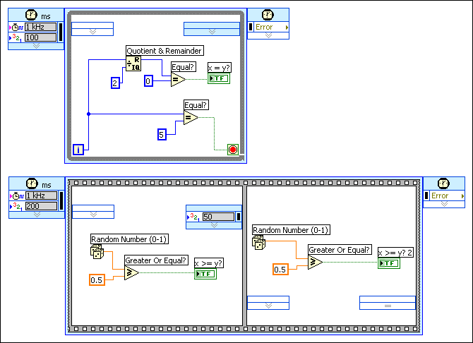

The priority of a timed structure specifies when the structure executes on the block diagram relative to other timed structures on the block diagram. Use the priority setting of a timed structure to write applications with multiple tasks that can preempt each other in the same VI. The higher the priority of a timed structure, the earlier the structure executes relative to other timed structures. The value for the Priority input must be a positive integer between 1 and 65,535.
Each timed structure on the block diagram creates and runs in its own execution system that contains a single thread, so no parallel tasks can occur. A Timed Loop executes in the data flow of a block diagram ahead of any VI not configured to run at a time-critical priority.
|
Note��Adding a VI configured to run at time-critical priority and a Timed Loop on the same block diagram can lead to unexpected timing behavior. |
You can assign a priority to each frame of a Timed Sequence structure or Timed Loop with frames. When you run a VI that contains timed structures, LabVIEW checks the priority of any frame ready to execute on the block diagram and first executes the frame with the highest priority.
|
Note��(NI Linux Real-time) Do not set more than 32 timed structure priority levels in a VI. LabVIEW returns an error if you attempt to set more than 32 timed structure priority levels. |
The following block diagram contains a Timed Loop and a Timed Sequence structure. The priority value of the first frame of the Timed Sequence structure (200) is higher than the priority value of the Timed Loop (100), so the first frame of the Timed Sequence structure executes first.

After the first frame of the Timed Sequence structure executes, LabVIEW compares the priority of other structures or frames that are ready to execute. The Timed Loop priority (100) is higher than the second frame of the Timed Sequence structure (50). In this example, the Timed Loop will execute completely before the second frame of the Timed Sequence structure executes.
You can set the priority of a timed structure by right-clicking the Input node and selecting Configure Input Node, then changing the Priority value. You also can dynamically set the priority of subsequent iterations of a Timed Loop by wiring a value to the Priority input of the Right Data node in the last frame. You can dynamically set the priority of the next frame of a timed structure by wiring a value to the Right Data node of the current frame. By default, the Right Data node of a frame does not display all of the available output terminals. You can resize the Right Data node or right-click the node and use the shortcut menu to display hidden terminals.
|
Note��(NI Linux Real-Time) National Instruments recommends interactively changing timed structure priority levels. Dynamically changing timed structure priority levels can decrease performance. |